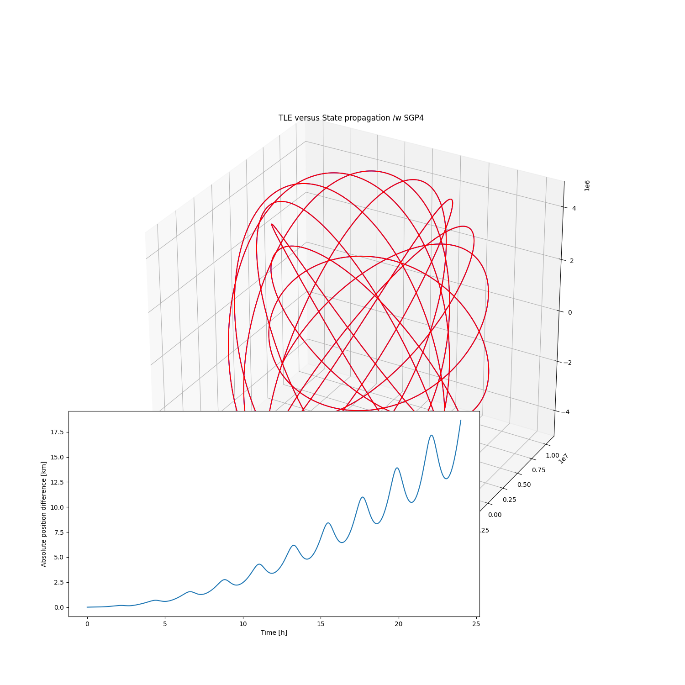

Note
Click here to download the full example code
TLE propagation with SGP4¶
This shows that TLEs really should be propagated as TLEs, not as states.

Out:
/home/danielk/venvs/sorts/lib/python3.7/site-packages/astropy/coordinates/builtin_frames/utils.py:76: AstropyWarning: (some) times are outside of range covered by IERS table. Assuming UT1-UTC=0 for coordinate transformations.
warnings.warn(msg.format(ierserr.args[0]), AstropyWarning)
/home/danielk/venvs/sorts/lib/python3.7/site-packages/astropy/coordinates/builtin_frames/utils.py:62: AstropyWarning: Tried to get polar motions for times after IERS data is valid. Defaulting to polar motion from the 50-yr mean for those. This may affect precision at the 10s of arcsec level
warnings.warn(wmsg, AstropyWarning)
import numpy as np
import matplotlib.pyplot as plt
from mpl_toolkits.mplot3d import Axes3D
from sorts.propagator import SGP4
from sgp4.api import Satrec
# Uncomment this to see what is actually recovered as mean elements from just one point
# def print_args(func):
# def pfunc(*args, **kwargs):
# #print the arguments, except the "self"
# print(args[1:])
# return func(*args, **kwargs)
# return pfunc
# #hook the sgp4init to print its input elements
# Satrec.sgp4init = print_args(Satrec.sgp4init)
prop = SGP4(
settings = dict(
out_frame='ITRS',
tle_input=True,
),
)
print(prop)
l1 = '1 5U 58002B 20251.29381767 +.00000045 +00000-0 +68424-4 0 9990'
l2 = '2 5 034.2510 336.1746 1845948 000.5952 359.6376 10.84867629214144'
#JD epoch calculated from lines
epoch = 2459099.79381767
t = np.linspace(0,3600*24.0,num=5000)
states_tle = prop.propagate(t, [l1, l2])
prop.set(
tle_input=False,
in_frame='ITRS',
epoch_format = 'jd',
)
states_teme = prop.propagate(t, states_tle[:,0], epoch=epoch, A=1.0, C_R = 1.0, C_D = 1.0)
fig = plt.figure(figsize=(15,15))
ax = fig.add_subplot(111, projection='3d')
ax.plot(states_tle[0,:], states_tle[1,:], states_tle[2,:],"-b")
ax.plot(states_teme[0,:], states_teme[1,:], states_teme[2,:],"-r")
ax.set_title('TLE versus State propagation /w SGP4')
ax2 = fig.add_axes([0.1, 0.1, 0.6, 0.3])
ax2.plot(t/3600.0, np.linalg.norm(states_tle[:3,:] - states_teme[:3,:], axis=0)*1e-3)
ax2.set_ylabel('Absolute position difference [km]')
ax2.set_xlabel('Time [h]')
plt.show()
Total running time of the script: ( 0 minutes 0.534 seconds)